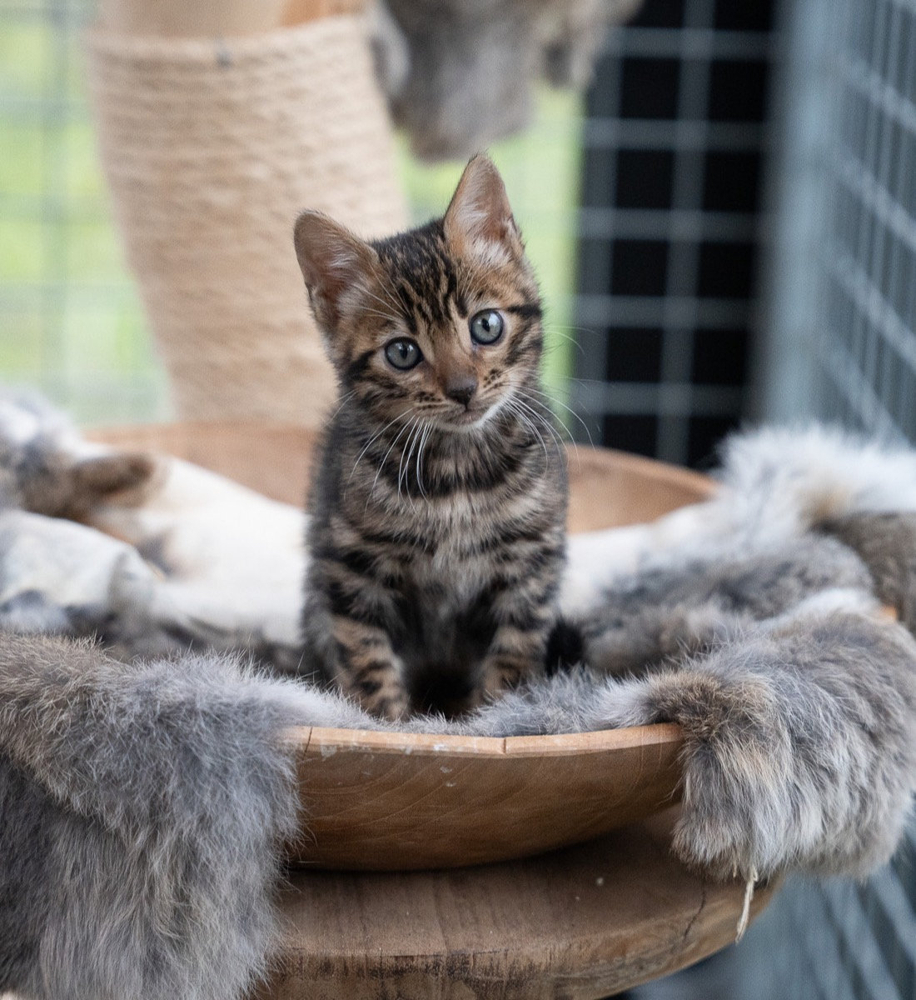

Dagelijks contact
Onze kittens wennen aan mensen, geluiden, aanraking en spel, zodat ze zich zeker en ontspannen ontwikkelen.
Kittens
Onze kittens groeien op met aandacht voor socialisatie, rust en dagelijks contact. We begeleiden iedere stap met veel zorg, zodat ze vol vertrouwen naar hun nieuwe thuis verhuizen.

Wat je Mag Verwachten
Onze kittens wennen aan mensen, geluiden, aanraking en spel, zodat ze zich zeker en ontspannen ontwikkelen.
Iedere kitten krijgt een warme start met passende zorg, duidelijke informatie en veel aandacht voor welzijn en ontwikkeling.
We kijken graag samen welke kitten het beste past bij jouw wensen, gezinssituatie en verwachtingen.

Interesselijst
Op dit moment hebben wij verschillende kittens beschikbaar, zowel zilver als bruin. Als je belangstelling hebt voor een kitten, horen we graag meer over jouw thuissituatie en wensen. Op die manier kunnen we rustig kijken of er een mooie match ontstaat.